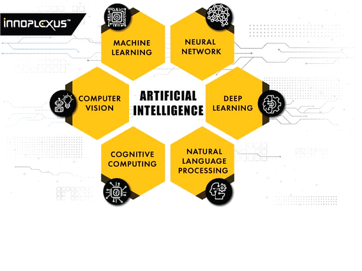

Artificial intelligence (AI) refers to the simulation of human intelligence in machines that are programmed to think like humans and mimic their actions. The term may also be applied to any machine that exhibits traits associated with a human mind such as learning and problem-solving
John McCarthy is one of the "founding fathers" of artificial intelligence, together with Alan Turing, Marvin Minsky, Allen Newell, and Herbert A. Simon.McCarthy coined the term "artificial intelligence" in 1955, and organized the famous Dartmouth conference in Summer 1956. This conference started AI as a field.
The beginnings of modern AI can be traced to classical philosophers' attempts to describe human thinking as a symbolic system. But the field of AI wasn't formally founded until 1956, at a conference at Dartmouth College, in Hanover, New Hampshire, where the term "artificial intelligence" was coined
AI has been used in business for various purposes including process automation (by transferring email and call data into record systems, helping resolve billing issues and updating records), cognitive insight (for predicting a buyer's preferences on sites, personalizing advertising and protecting against fraud)
Artificial intelligence can dramatically improve the efficiencies of our workplaces and can augment the work humans can do. When AI takes over repetitive or dangerous tasks, it frees up the human workforce to do work they are better equipped for—tasks that involve creativity and empathy among others.
